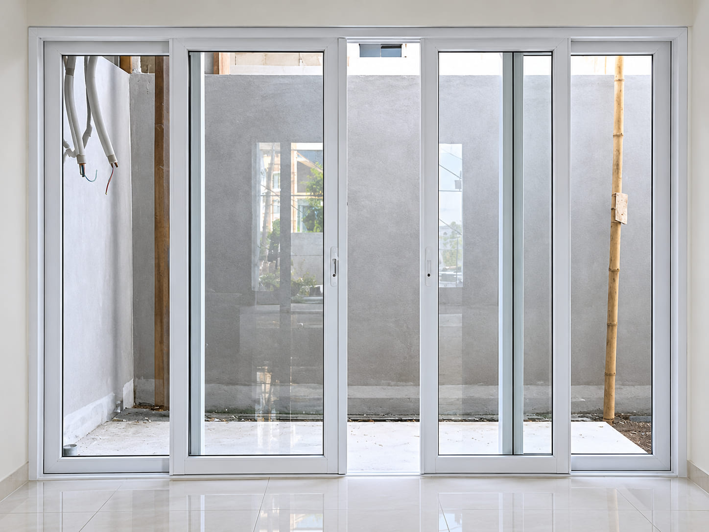

Pintu UPVC Sliding
[ISI MANUAL: jelaskan apa itu pintu UPVC sliding dan siapa yang membutuhkannya | keyword: pintu UPVC sliding, pintu UPVC geser | target: 70-100 kata]

Keunggulan Pintu UPVC Sliding
[ISI MANUAL: tulis 3-5 keunggulan khusus produk berdasarkan data terverifikasi | keyword: pintu UPVC sliding, pintu sliding UPVC | target: minimal 100 kata]
Lokasi Pemasangan yang Sesuai
[ISI MANUAL: jelaskan area pemasangan yang cocok beserta alasan dan batasannya | keyword: pintu UPVC geser, pintu UPVC sliding | target: 80-100 kata]
Pilihan Warna, Finishing, Kaca, dan Aksesori
[ISI MANUAL: cantumkan pilihan yang tersedia dan konfirmasi bila bervariasi | keyword: pintu sliding UPVC, pintu UPVC sliding | target: 70-90 kata]
Cara Kerja dan Perawatan
[ISI MANUAL: jelaskan cara pengoperasian dan perawatan mengikuti panduan produk | keyword: pintu UPVC sliding, pintu geser UPVC | target: 80-100 kata]
Perbandingan dengan Model Pintu Lain
[ISI MANUAL: bandingkan secara faktual dengan pintu lipat atau swing dan terangkan faktor pemilihan | keyword: pintu UPVC sliding, pintu UPVC swing | target: 80-100 kata]
Cara Pemesanan Pintu UPVC Sliding
[ISI MANUAL: jelaskan tahapan konsultasi hingga pemasangan khusus produk ini | keyword: pintu UPVC sliding, pemesanan pintu UPVC | target: 50-70 kata]
FAQ Pintu UPVC Sliding
Apa yang perlu diketahui sebelum memilih pintu UPVC sliding?
[ISI MANUAL: jawab dengan informasi produk terverifikasi | keyword: pintu UPVC sliding | target: 30-50 kata]
Di mana pintu UPVC sliding dapat dipasang?
[ISI MANUAL: jelaskan lokasi dan kondisi pemasangan yang sesuai | keyword: pintu UPVC geser | target: 30-50 kata]
Apa pilihan kaca dan aksesori yang tersedia?
[ISI MANUAL: sebutkan hanya pilihan aktual yang tersedia | keyword: pintu sliding UPVC | target: 30-50 kata]
Bagaimana cara merawat pintu UPVC sliding?
[ISI MANUAL: berikan panduan perawatan yang telah dikonfirmasi | keyword: pintu UPVC sliding | target: 30-50 kata]
Diskusikan Pintu UPVC Sliding
Konsultasikan kebutuhan produk Anda untuk proyek di berbagai wilayah Indonesia.